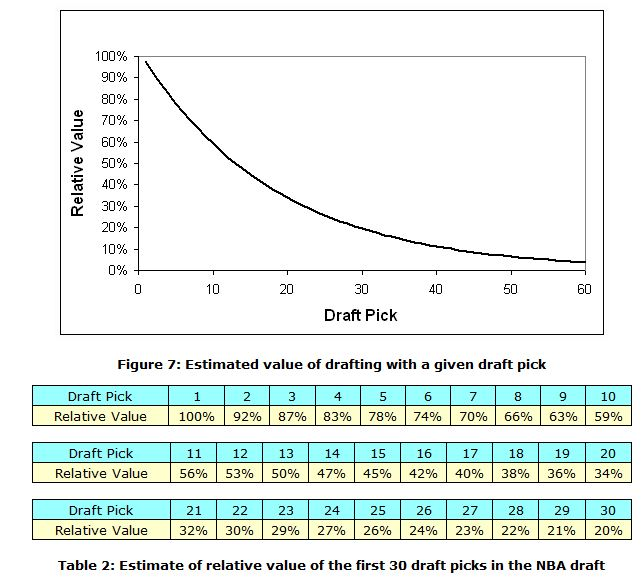
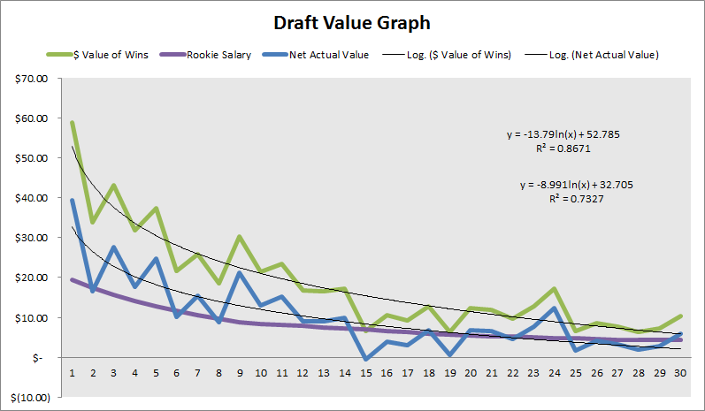

1 What Research Says about NBA Draft Pick Value
The value of NBA draft picks is a common talking matter in the NBA analytics community. In this introductory write-up I summarize conclusions made by other researchers about the biggest questions that I (and probably many others) have about the NBA draft pick value. I plan to follow this peer review up with a step-by-step guide where I will go into detail explaining my methodology and discoveries in attempting to answer to these questions for myself.1
1.1 The Question(s)
1.1.1 The Basic Question
To be clear, the primary (or “first”) question that I am looking to answer can be stated explicitly as follows: “How valuable are NBA draft picks?”
Before attempting to answer this question, I think that we should acknowledge that the term “value” is relatively ambiguous. In fact, I would say that the interpretation of “value” can lead to a range of different answers. Thus, I should be clear in how I intend to interpret it.
From my point of view, the answer to the question depends on whether wants to define a player’s value either in terms of basketball production or monetary cost.;2 Thus, on one extreme, one can reasonably come up with one answer that completely neglects cost in favor of pure basketball production. (This kind of answer would emphasize draft slots at which selected players have historically produced the most basketball-wise, such as those at the top of the first round)). On the other extreme, an answer that completely neglects basketball production in favor of raw cost considerations might also be deduced.3 I am interested in trying to determine the answer to the question of “value” in two ways.
- One answer that considers only basketball production (i.e. the first kind of answer that I have suggested).
- Another answer that discounts basketball production with monetary cost.
1.2 The Answer(s)
In this section I summarize and draw similarities among the methodologies and findings made by six researchers. I have listed the researchers and their writings in order of publication date.5
1.2.1 1. Justin Kubatko
In a 2009 article published at his website Basketball Reference (which is like the mecca for all NBA stats nerds like me)), Justin Kubatko concisely documents his use of win shares (WS) to measure “expected value” (EV). In specific, he tracks the WS accumulated throughout the entire careers of players drafted from 1977 to 1991 (because all players who had been drafted in that year range had retired by the time of his analysis) and employs linear regression with a logarithmic transformation (i.e. linear-log regression) to come up with a formula for EV—EV = 76.9 - 18.8 * log(pick). Moreover, he records WS earned in only the first four years of a player’s career (to account for the conventional length of rookie contracts under the NBA’s collective bargaining agreement (CBA)) for all players drafted from 1977 to 2005 (meaning that all players drafted in the last year of that range had the opportunity to play four years) to come up with another linear-log formula for EV—EV = 26.5 - 6.3 * log(pick). In summary, Kubatko clearly infers that the “value” to be gained from draft slots diminishes with increasing pick number. However, his take is solely phrased in terms of basketball production; he stops short of putting his results in terms of monetary units.
In relation to the questions that I have posed, Kubatko’s formulas and tables gives an answer that considers only basketball-production to my first question of general NBA draft pick value.
1.2.2 2. Aaron Barzilai
In a somewhat formal research article posted at 82games.com, Aaron Barzilai builds upon the work of Kubatko using data from 1980 to 2007. He analyzes production in terms of four different metrics–PER-minutes, player wins, WS, and estimated salary—and he looks at each metric over three different time periods—__career, first four years, and years with rookie team.6

Like Kubatko, Barzilai presents an answer to my first question of big-picture draft pick value in terms of basketball production. Furthermore, as can be inferred from the above graph, he also provides an answer to my second question regarding the cost-effectiveness of picks.
1.2.3 3. Arturo Galletti
In a 2013 post, Arturo Galletti, one of the main contributors at Wages of Wins, provides some interesting visuals in describing his take on the subject. Without specifying exactly which years he drew data from, he uses wins produced (WP) to measure basketball value, translates WP to a monetary value using an estimate of \(1.7 million per win, and finds the net monetary value by taking the difference of the monetary WP and the CBA’s rookie salary obligation for each draft slot. Following the precedent set by Kubatko and Barzilai, Galletti accounts for the typical length of the contracts of first-round picks by averaging all data over the __first four seasons__ after draft year. However, because he also considers the monetary obligations of these contracts under the CBA, which only applies to first-round picks, he only evaluates the top 30 picks. (Kubtako and Barzilai models all 60 picks because they do not attempt to contextualize the monetary value of picks and wins.) After applying a linear-log regression, Galletti finds __"Value of Wins [\) Million]”:__ -13.79 * ln(pick) + 52.785 and “Net Actual Value [$ Million]”: -8.991 * ln(pick) + 32.705. Galletti’s regression graph is shown below.

In contextualizing Galletti’s findings with respect to my questions, it is evident that he answers my first question in both fashions for which I sought an answer—his “Avg Wins Per Pick” and “Net Actual Value” data sets give answers for value in terms of pure basketball production and basketball production discounted by cost.
1.2.4 4. Nate Silver
Next, Nate Silver took a look at the issue ahead of the 2014 draft at his website FiveThirtyEight. Using data from 1985 through 2014 and extrapolating data for rookies from the 2012 to 2014), Silver makes formulation that is similar to that of Galletti. Like Galletti, he finds the “Net Profit” (the analogue of Galletti’s “Net Actual Value”) of first-round draft picks after translating wins to currency and discounting these values (which he calls “Net Value Produced at Free-Agent Market Rate”) by rookie salary obligations. However, unlike Galletti, Silver uses WS as his choice for evaluating basketball production, and he evaluates everything on a five-year basis.7

With his “Net Value Produced at Free-Agent Market Rate” and “Net Profit” data sets, Silver analysis provides answers to my first question in terms of pure basketball production and cost-discounted basketball production.
1.2.5 5. Saurabh Rane

More recently, just ahead of the 2016 draft Saurabh Rane tackled the question of NBA draft pick value in a guest post in Nylon Calculus. Employing first-round data for the rookie classes from 1985 to 2012, he evaluates players with respect to their highest single-season value over replacement player (VORP) over the course of their careers. His approach is arguably more granular than that of others, which makes it relatively distinct. He neglects money considerations entirely and classifies players into one of four quartiles —All-NBA First-Teamer (top 2.5%), All-Star (top 10%), rotation player, or bust—while looking at seven ranges of picks—first, early lottery (picks 2 and 3), early-mid lottery (picks 4 to 6), mid-late lottery ( picks 7 to 10), late lottery ( picks 11 to 14), mid-late first (picks 15 to 22), and late-first (picks 23 to 30). ^[In classifying rookies into four tiers, his approach somewhat mirrors that of a 2015 FiveThirtyEight piece authored by Neil Pane and Zach Bradshaw in which they forecast that year’s draft prospects using applied statistics.
 However, although he doesn’t provide explicit values in tabular form or implicit ones in the form of an equation, Rane’s charts, on of which can be seen above, clearly answer my first question about the general relationship between value and draft pick in terms of on-court production. He verifies the deductions made by others (either empirically or mathematically) that the pure basketball production that can be expected of higher picks is much greater than that for lower picks, and that this drop-off is non-linear (for potential All-First Teamers and All-Stars).
However, although he doesn’t provide explicit values in tabular form or implicit ones in the form of an equation, Rane’s charts, on of which can be seen above, clearly answer my first question about the general relationship between value and draft pick in terms of on-court production. He verifies the deductions made by others (either empirically or mathematically) that the pure basketball production that can be expected of higher picks is much greater than that for lower picks, and that this drop-off is non-linear (for potential All-First Teamers and All-Stars).
Put another way, he asserts that the chance of a player becoming elite (i.e. All-First Teamer or All-Star) is not linearly related to their draft position; rather, top picks have a much greater chance at becoming All-Stars or All-NBA First-Teamers.
1.2.6 6. Michael Lopez

Writing even more recently than Rane is Michael Lopez, an Assistant Professor of Statistics at Skidmore College. He provides some input on the NBA in a broader analysis that compares the importance of draft picks in the four major American team sports. For the NBA draft specifically, he uses career WS and a locally weighted scatter-plot smoothing (LOESS) regression to model data from 1990 to 2005. Like Rane, he cannot provide a formula for the regression, as a consequence of using LOESS. Nevertheless, he finds that the relative value of late second-round picks is much less (about 20 times less) than that of top picks, which confirms the empirical notion of experts and the findings of other researchers that superstars dominate the NBA.8

In summary, Lopez’s research goes as far as Kubatko’s and Rane’s in its relevance to answering my questions—that is, it provides an answer to the big-picture question of value gained from draft picks, but only in terms of basketball production.9
1.2.7 The Aggregate Answer(s)
At the very least, each of the six analysts I have mentioned here—Kubatko, Barzilai, Galletti, Silver, Rane, and Lopez—modeled the relationship between draft position and basketball production, providing one of the two types of answers to my first question regarding the general value of draft picks. Although they differed in their choices for metric for assessing basketball production (e.g. WS, VORP, etc.), sample size of data (i.e range of draft years), the time span for evaluating production (e.g. four years, career, etc.), and their methods for regression (e.g. linear-log, LOESS, etc.), they all came to the basically the same conclusion—that is, that players who are selected earlier are likely to outperform those selected later (which is precisely what a rational observer would hypothesize).10
Furthermore, Galletti and Silver go beyond simply measuring the value of draft slots in terms of basketball production and contextualize it in terms of monetary cost, which is what I sought in a second type of answer to my first question about big-picture NBA draft pick value. Nevertheless, n all cases studied, each researcher found the relationship between value and draft slot to have a decaying, non-linear characteristic.
Finally, I should note that Barzilai provides an answer to my second question about the cost-effectiveness of picks. He shows that mid-first-round picks give the greatest “return on investment” relative to the rest of the top 30 picks.
1.3 Final Thoughts
In my own take (which you can read in an upcoming post), I plan to draw inspiration mostly from Galletti and Silver because I want to do my best to evaluate the picks from a monetary perspective. However, I am intent on using a different methodology and providing some (slightly) different analysis.11
I plan to discuss some closely related topics as well.↩
Notably, one can even interpret basketball production and monetary cost in a number of different ways, although the former is typically evaluated in terms of an “all-in-one” advanced metric and the latter is typically evaluated in terms of salary obligations.↩
Such an answer would favor those slots where picks have historically received the least amount of money from contracts, such as those in the late in the second.↩
Admittedly, this re-phrasing isn’t something someone would say in normal conversation.↩
Consequently, answers to the questions that I have posed are not given in an outlined fashion.↩
Barzilai doesn’t analyze the third time period much in his discussion. After discarding the combination of estimated salary for the non-career time stints, he comes up with 10 data sets. He normalizes on a percentage basis relative to the top pick such that the units of the dependent-variable (i.e. the basketball-production metric) are eliminated. After taking an average of the seven data sets not involving time spent with rookie team, he comes up with an explicit formula for “relative value” (which I will abbreviate as RV)–RV: 0.947 * exp(-0.05331 * (pick — 1)). Although Barzilai doesn’t directly contextualize his results in terms of money, he finds that the later picks are relatively undervalued when comparing a normalized curve for estimated value with a normalized curve for rookie salary obligations (dictated by the CBA).↩
Both of these are relatively minute differences.↩
Furthermore, aside from verifying the dramatic drop-off in on-court production with increasingly lower draft position, Lopez finds that the drop-off is more dramatic in the NBA than in the other three major American team sports. In other words, he shows that the top NBA picks are more valuable that the early picks in the drafts of other sports.↩
I do not mean to discredit Lopez (or Kubatko or Rane) for not supplying answers to all of my questions. I acknowledge that each author had unique intentions in their research. For example, Lopez was concerned with expected value in sports other than just the NBA.↩
The thinking behind the hypothesis that the production of players in the NBA (or any sport) correlates relatively closely with draft position is that players selected at higher slots demonstrate higher ability and potential to improve before being drafted, so they are more likely to succeed and add value to their teams. Lopez finds that this is true for each of the four major American sports For the NBA specifically, this correlation between on-court value and draft position has been verified in research looking at various lengths of time: Rane and Lopez evaluated value added over the length of players’ entire careers, Galletti and Silver solely considered the time spanning the length of players’ rookie contracts, and Kubatko and Barzilai looked at both of these periods of time.↩
For example, while Silver makes a rigorous effort to account for exceptions to the rule-of-thumb for rookie contracts, I think I will be happy to ignore these cases. To name one way in which I will differ from Galletti, I plan on using WS, not WP, for evaluating basketball production. Furthermore, while Silver uses his model to focus nearly exclusively on the value of the top pick, and Galletti hinges his analysis to evaluate the importance of draft picks for winning championships, I’m interested in a variety of issues. I will try to provide enough basis for further analysis by deriving several models, including one that I can leverage to either verify or deny Barzilai’s implication that picks in the teens are more cost-effective than those at the top and bottom of the first round.↩